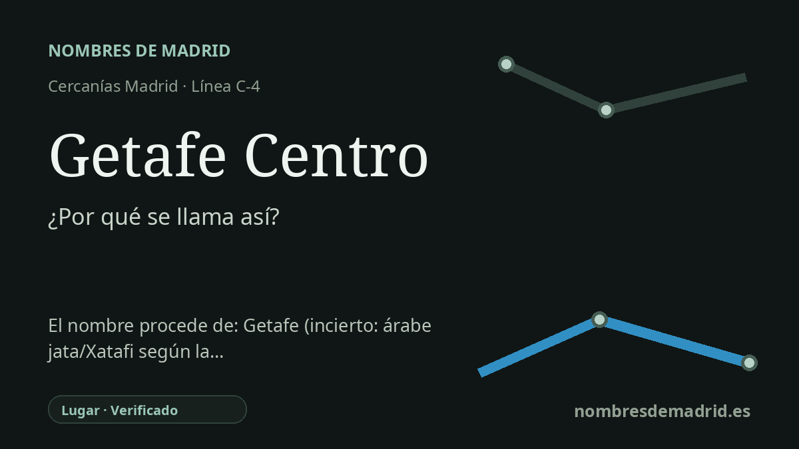

Publicado el · Investigación de Nombres de Madrid · Cómo verificamos cada origen · 7 fuentes consultadas
Respuesta rápida
Getafe Centro debe su nombre a su posición central en el municipio de Getafe. El nombre de la ciudad tiene un origen antiguo e incierto, con una tradición local de 1575 que hacía derivar Xetafe de voces árabes asociadas a la longitud porque el núcleo creció a lo largo del camino de Madrid a Toledo.
La historia del nombre
Getafe Centro es una estación de nombre toponímico. Su nombre significa la estación central de Getafe, el gran municipio situado al sur de Madrid y servido por la línea C-4 de Cercanías y por MetroSur en la estación de Metro contigua. En el plano ferroviario, el origen no es una persona, un acontecimiento ni una advocación, sino la propia ciudad y la función de la estación en el centro urbano.
La historia más profunda está en el nombre Getafe. En las Relaciones Topográficas de 1575, ordenadas en tiempos de Felipe II, los informantes locales dijeron que el lugar se llamaba entonces Xetafe y reconocieron que no sabían con certeza por qué se había puesto ese nombre. Aun así, recogieron una explicación tradicional: según les habían dicho, en árabe Jata significaba una cosa larga, y el nombre encajaba con un poblamiento extendido a lo largo del camino real de Madrid a Toledo.
Ese relato de 1575 vincula también Getafe con un lugar anterior llamado Alarnes. Según los testigos, el primer emplazamiento era húmedo y enfermizo, de modo que los vecinos se fueron desplazando hacia el camino, primero levantando casas a modo de ventas y luego formando un núcleo alargado. La noticia es valiosa porque documenta cómo el Getafe del siglo XVI explicaba su propio origen, aunque por sí sola no demuestre la derivación lingüística.
La investigación moderna es prudente. Jairo J. García Sánchez, en el Centro Virtual Cervantes, afirma que Getafe presenta serios problemas etimológicos y que poco se puede decir de él sin dudar. Señala que se presume un origen árabe por el aspecto y la configuración del nombre, y que se ha propuesto una noción relacionada con la longitud, pero advierte que las documentaciones medievales no permiten ir más allá por ahora.
La estación tiene además su propia historia denominativa en el transporte. La parada ferroviaria se llamó Getafe-Badajoz hasta 1981 y después Getafe Centro; la estación de Metro abrió en 2003 como Getafe Central, con la misma idea de intercambiador central pero con la forma usada por Metro. La estación se llama con seguridad por el centro de Getafe, mientras que el origen antiguo de Getafe sigue siendo probable pero no resuelto.